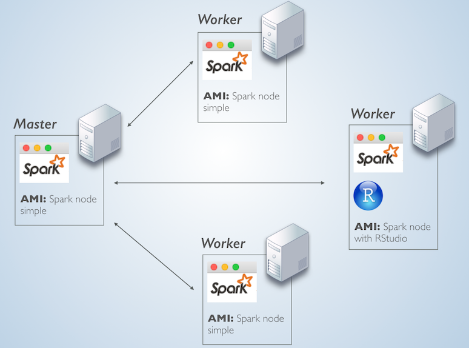
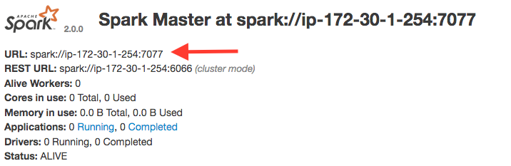

Spark Standalone Deployment in AWS
Overview
The plan is to launch 4 identical EC2 server instances. One server will be the Master node and the other 3 the worker nodes. In one of the worker nodes, we will install RStudio server.
What makes a server the Master node is only the fact that it is running the master service, while the other machines are running the slave service and are pointed to that first master. This simple setup, allows us to install the same Spark components on all 4 servers and then just add RStudio to one of them.
The topology will look something like this:

AWS EC Instances
Here are the details of the EC2 instance, just deploy one at this point:
- Type: t2.medium
- OS: Ubuntu 16.04 LTS
- Disk space: At least 20GB
- Security group: Open the following ports: 8080 (Spark UI), 4040 (Spark Worker UI), 8088 (sparklyr UI) and 8787 (RStudio). Also open All TCP ports for the machines inside the security group.
Spark
Perform the steps in this section on all of the servers that will be part of the cluster.
Install Java 8
- We will add the Java 8 repository, install it and set it as default
sudo apt-add-repository ppa:webupd8team/java
sudo apt-get update
sudo apt-get install oracle-java8-installer
sudo apt-get install oracle-java8-set-default
sudo apt-get updateor alternatively, run
sudo apt install openjdk-8-jdkto install Open JDK version 8.
Download Spark
- Download and unpack a pre-compiled version of Spark. Here’s is the link to the official Spark download page
wget http://d3kbcqa49mib13.cloudfront.net/spark-2.1.0-bin-hadoop2.7.tgz
tar -xvzf spark-2.1.0-bin-hadoop2.7.tgz
cd spark-2.1.0-bin-hadoop2.7Create and launch AMI
We will create an image of the server. In Amazon, these are called AMIs, for information please see the User Guide.
Launch 3 instances of the AMI
RStudio Server
Select one of the nodes to execute this section. Please check the RStudio download page for the latest version
Install R
- In order to get the latest R core, we will need to update the source list in Ubuntu.
sudo sh -c 'echo "deb http://cran.rstudio.com/bin/linux/ubuntu xenial/" >> /etc/apt/sources.list'
gpg --keyserver keyserver.ubuntu.com --recv-key 0x517166190x51716619e084dab9
gpg -a --export 0x517166190x51716619e084dab9 | sudo apt-key add -
sudo apt-get update- Now we can install R
sudo apt-get install r-base
sudo apt-get install gdebi-coreInstall RStudio
- We will download and install 1.044 of RStudio Server. To find the latest version, please visit the RStudio website. In order to get the enhanced integration with Spark, RStudio version 1.044 or later will be needed.
wget https://download2.rstudio.org/rstudio-server-1.0.153-amd64.deb
sudo gdebi rstudio-server-1.0.153-amd64.debInstall dependencies
- Run the following commands
sudo apt-get -y install libcurl4-gnutls-dev
sudo apt-get -y install libssl-dev
sudo apt-get -y install libxml2-devAdd default user
- Run the following command to add a default user
sudo adduser rstudio-userStart the Master node
Select one of the servers to become your Master node
Run the command that starts the master service
sudo spark-2.1.0-bin-hadoop2.7/sbin/start-master.sh- Close the terminal connection (optional)
Start Worker nodes
- Start the “slave” service. Important: Use dots not dashes as separators for the Spark Master node’s address
sudo spark-2.1.0-bin-hadoop2.7/sbin/start-slave.sh spark://[Master node's IP address]:7077sudo spark-2.1.0-bin-hadoop2.7/sbin/start-slave.sh spark://ip-172-30-1-94.us-west-2.compute.internal:7077
- Close the terminal connection (optional)
Pre-load pacakges
Log into RStudio (port 8787)
Use ‘rstudio-user’
install.packages("sparklyr")Connect to the Spark Master
- Navigate to the Spark Master’s UI, typically on port 8080

Note the Spark Master URL
Logon to RStudio
Run the following code
library(sparklyr)
conf <- spark_config()
conf$spark.executor.memory <- "2GB"
conf$spark.memory.fraction <- 0.9
sc <- spark_connect(master="[Spark Master URL]",
version = "2.1.0",
config = conf,
spark_home = "/home/ubuntu/spark-2.1.0-bin-hadoop2.7/"
)